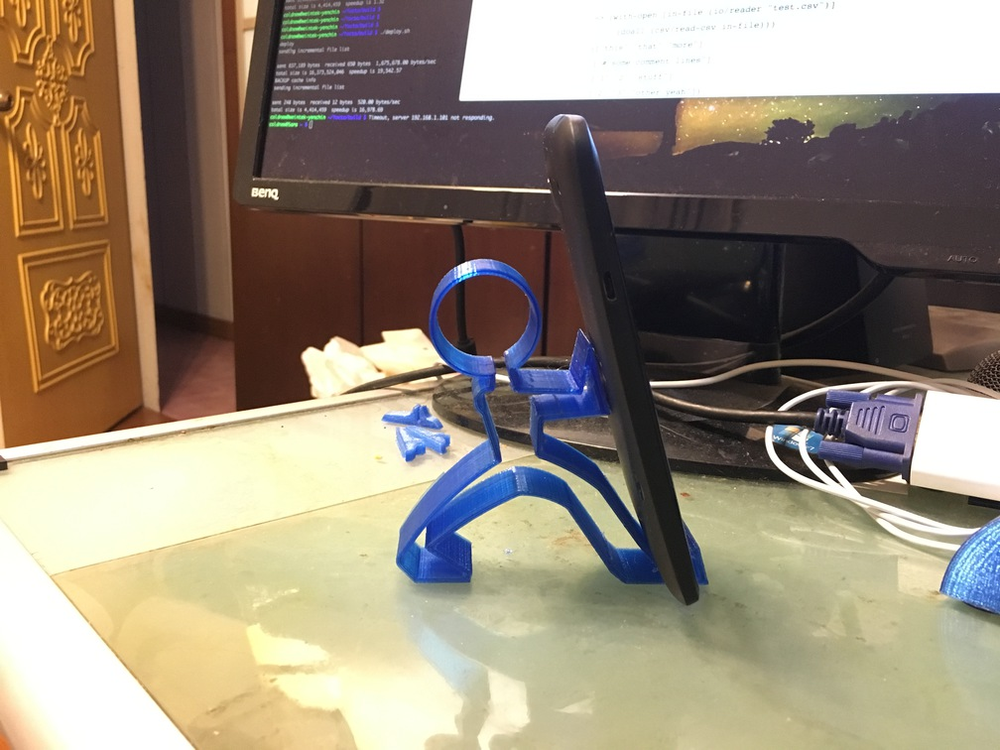
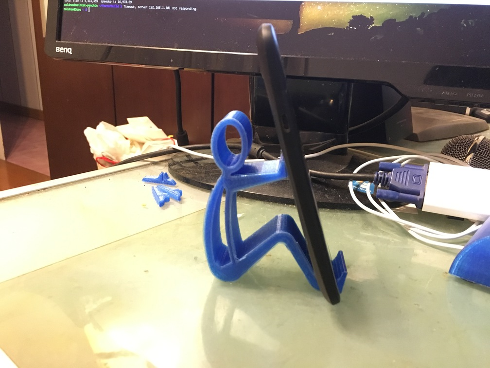
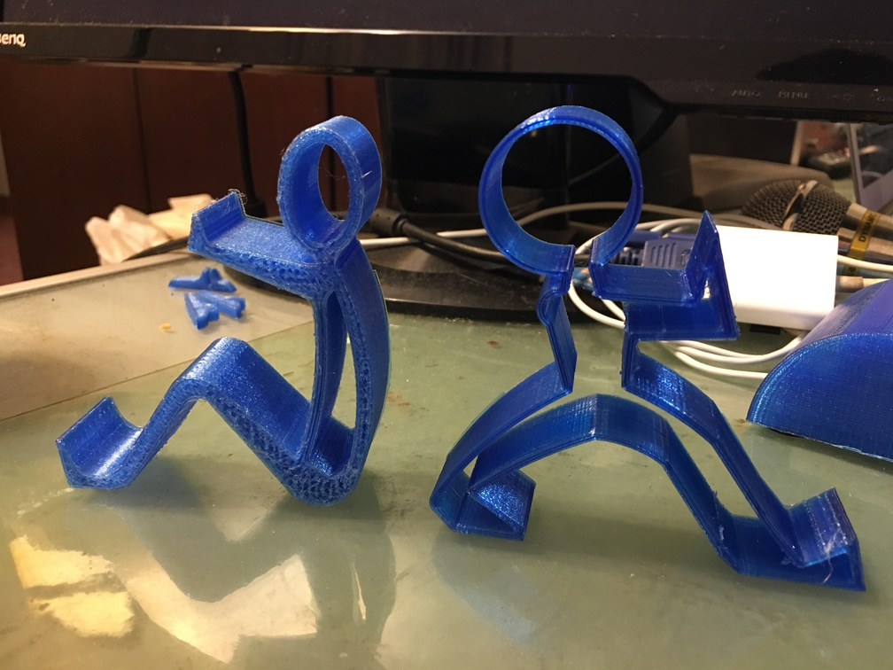

話說自 2013 年組了 3D 印表機後，有事沒事都會隨便找個模型來印印看，這兩個手機座是 最近想到於是又回來再印一次的版本，是還蠻有趣的概念 :)
不過我自己使用的心得，覺得這兩款人形手機座使用預設的模型會比較不穩，容易向左或向 右傾倒，因此要列印時弄厚一點會比較好 ~
站立式
這是取自於 Thingverse - Smartphone Holder 這個模型，是最初讓我對這種類型手機座感 興趣的始祖。

坐式
這個模型則取自於 Thingverse - Phone holder Phone stand ，是最近才注意到的。

排排站

我的列印資訊
我習慣使用 slic3r 來作為切割軟體，以下是我設定參數資訊
| Parameter | value |
|---|---|
| Filament | PLA |
| Raft | No |
| Supports | No |
| Resolution | 0.4mm nozzle, 0.2mm layer height |
| Infill | 15% |
設定檔: 下載 slic3r 設定檔